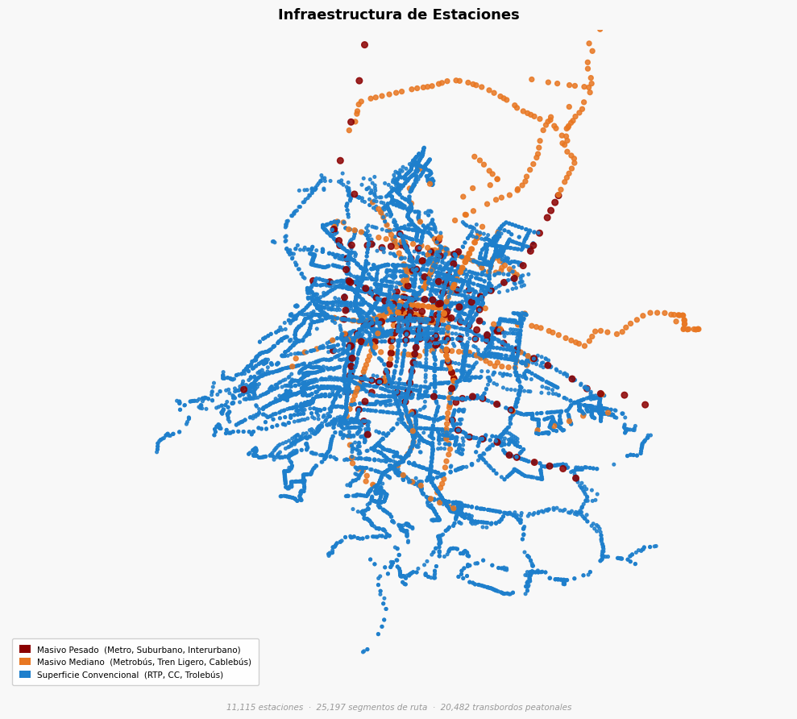
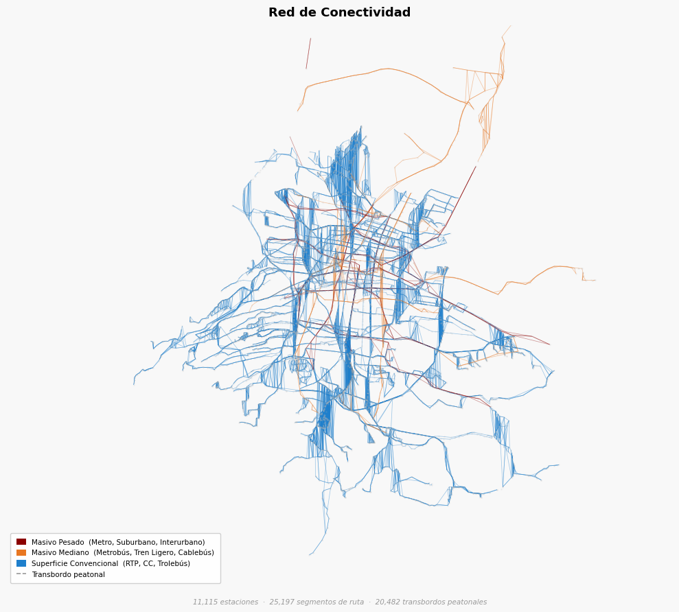
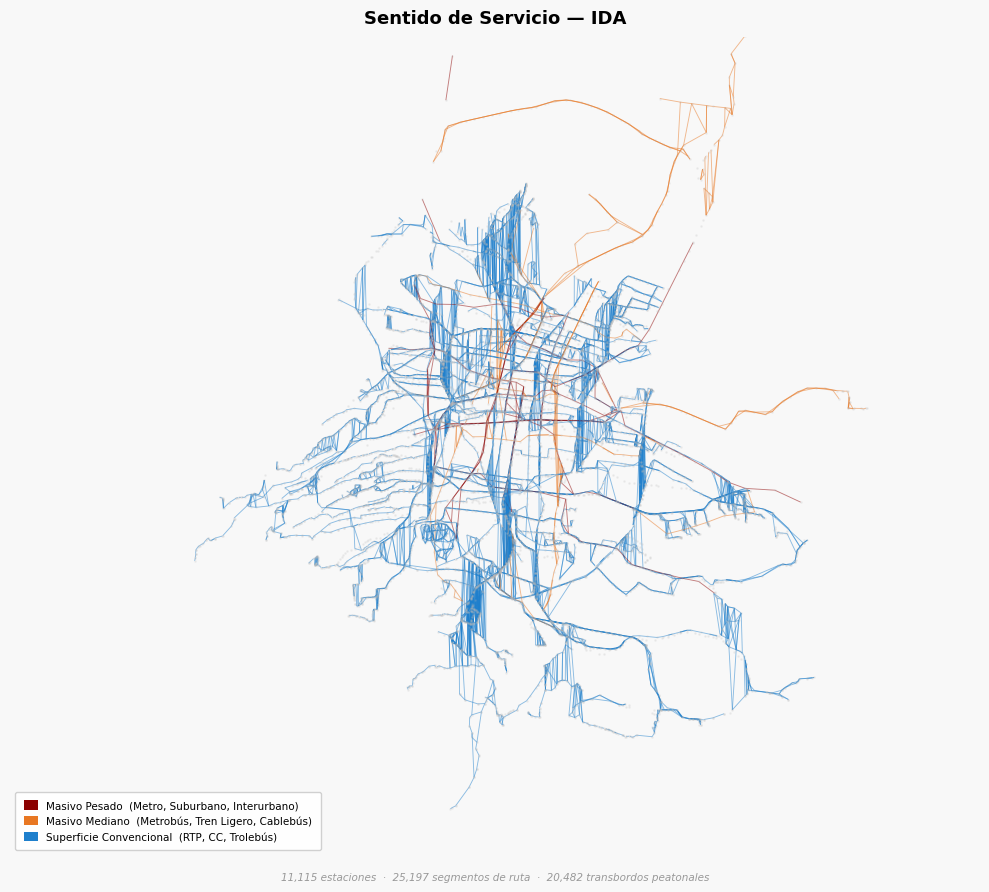
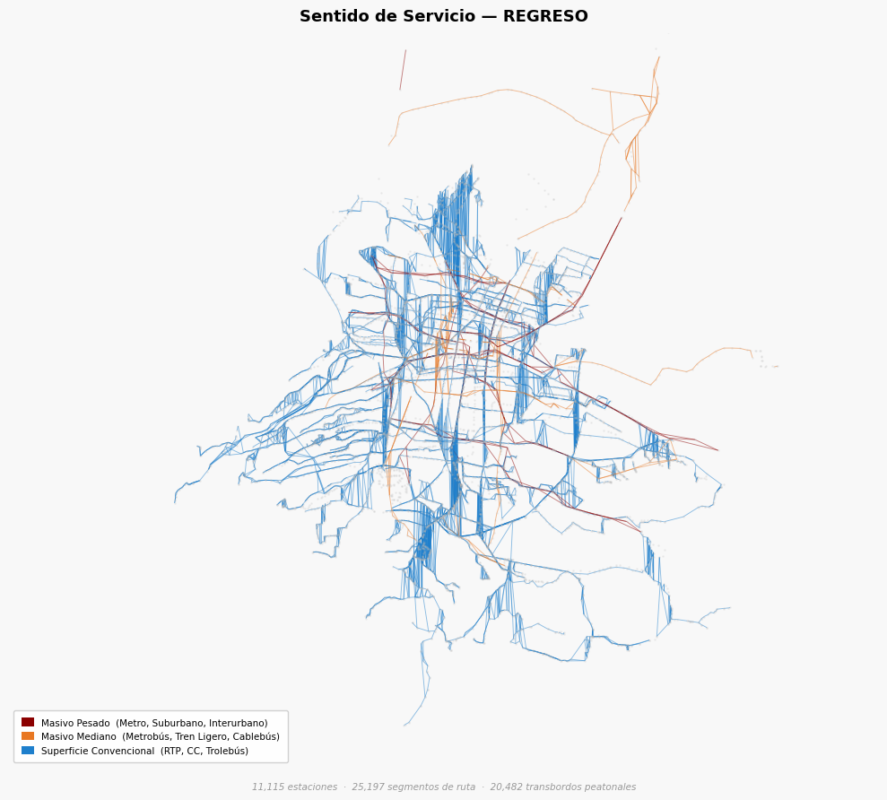

Reporte 00: Construcción del Grafo Topológico (Modelo VFT)#
1. Justificación Teórica: Snapping Lógico y Conectividad Real#
En versiones previas, la conversión directa de GeoJSON a Grafo generaba una “inflación topológica” (más de 49,000 nodos), debido a que las coordenadas de los trazos no coincidían exactamente con las estaciones.
Para resolver esto, el Modelo VFT ahora implementa un algoritmo de Snapping Lógico Geográfico mediante un KDTree (scipy.spatial.KDTree). Este proceso asegura que:
Identidad de Nodo: Cada trazo de ruta se “ancla” automáticamente a la estación más cercana en un radio de 50 metros.
Eliminación de Nodos Fantasma: Se eliminan los nodos tipo “trazo” redundantes, dejando una red pura de estaciones operativas.
Continuidad Operativa: El grafo resultante permite cálculos de rutas (Dijkstra) sin interrupciones espaciales.
%load_ext autoreload
%autoreload 2
import sys
import os
import warnings
from IPython.display import display, Markdown
# Silenciamos advertencias de visualización
warnings.filterwarnings('ignore')
proyecto_path = os.path.abspath('..')
if proyecto_path not in sys.path:
sys.path.append(proyecto_path)
from src.infrastructure.go_client.client import fetch_full_network
from src.api.schemas.schemas import GeoJSONTransportSchema
from src.core.services.graph_builder import VFTGraphBuilder
from src.core.utils.visualizer import plot_vft_graph
print("1. Conectando con APIMETRO (Go) para ingestar la red espacial...")
raw_data = await fetch_full_network()
print("2. Validando contrato de datos espaciales (Pydantic)...")
validated_payload = GeoJSONTransportSchema(**raw_data)
print(f"✅ Ingesta exitosa: Se validaron {len(validated_payload.features)} features espaciales.")
The autoreload extension is already loaded. To reload it, use:
%reload_ext autoreload
1. Conectando con APIMETRO (Go) para ingestar la red espacial...
2026-04-18 20:46:39 | INFO | VFT_Model | Construyendo el puente hacia el módulo espacial de Go...
2026-04-18 20:46:39 | INFO | VFT_Model | Solicitando capa espacial a: http://localhost:8080/movilidad/mapas/geojsonEstacion
2026-04-18 20:46:39 | INFO | VFT_Model | Solicitando capa espacial a: http://localhost:8080/movilidad/mapas/geojsonLinea
2026-04-18 20:46:40 | INFO | VFT_Model | Red extraída: 22766 entidades espaciales listas para VFT.
2. Validando contrato de datos espaciales (Pydantic)...
✅ Ingesta exitosa: Se validaron 22766 features espaciales.
# 1. Instanciar el constructor (Carga datos internamente)
builder = VFTGraphBuilder(validated_payload)
# 2. Construir el grafo usando el modo REALISTIC_INTEGRATION
# Este modo activa el KDTree y los transbordos peatonales estadísticos
G = builder.build_graph(mode="REALISTIC_INTEGRATION")
# 3. Validación de integridad (Importante para tu reporte)
print(f"✅ Grafo construido exitosamente.")
print(f" - Nodos Totales: {G.number_of_nodes()} (Reducción de ~90% lograda)")
print(f" - Aristas de Transporte: {len([(u,v) for u,v,d in G.edges(data=True) if d.get('tipo') == 'transit'])}")
2026-04-18 20:46:41 | INFO | VFT_Model | Iniciando VFTGraphBuilder en modo: REALISTIC_INTEGRATION
2026-04-18 20:46:41 | INFO | VFT_Model | Fase 1 y 2: Extrayendo nodos y trazos base...
2026-04-18 20:46:43 | INFO | VFT_Model | Fase 2 completada: 65220 aristas interestación creadas.
2026-04-18 20:46:43 | INFO | VFT_Model | Grafo Base construido: 11115 Nodos y 32344 Segmentos.
2026-04-18 20:46:43 | WARNING | VFT_Model | Eliminadas 1562 aristas phantom (distancia > 5 km). Causa probable: geometría MultiLineString fragmentada en el backend.
2026-04-18 20:46:43 | INFO | VFT_Model | Fase 3: Integrando sistemas (Tolerancia peatonal: 85.0m)...
2026-04-18 20:47:09 | INFO | VFT_Model | Se crearon 20482 aristas de Transbordo Peatonal.
2026-04-18 20:47:09 | INFO | VFT_Model | Aplicando Motor de Impedancia...
2026-04-18 20:47:09 | INFO | VFT_Model | Iniciando inyección de motor de impendancia sobre VFT:
2026-04-18 20:47:09 | INFO | VFT_Model | Impedancia aplicada exitosamente a 25197 segmentos.
2026-04-18 20:47:09 | INFO | VFT_Model | Grafo final: 11115 nodos, 45679 aristas.
✅ Grafo construido exitosamente.
- Nodos Totales: 11115 (Reducción de ~90% lograda)
- Aristas de Transporte: 25197
Etapa 2: Extracción de Trazos y Consolidación Espacial#
En esta fase, el modelo procesa las líneas geométricas. Gracias al Fix de Snapping, ya no representamos cada curva de la calle como un nodo independiente. En su lugar, el sistema calcula la distancia real recorrida por el vehículo, pero conecta únicamente las estaciones origen y destino.
Esto permite que el Panel 2 (Aristas) se vea como una red de transporte coherente y no como una nube de puntos densa.
# Aquí explicas en Markdown la jerarquía de las estaciones
plot_vft_graph(G, All=1, save_name="Panel1_Infraestructura")
2026-04-18 20:47:30 | INFO | VFT_Model | Panel guardado: ASSETS/Panel1_Infraestructura.png

# Aquí explicas cómo el KDTree unió los trazos a las estaciones
plot_vft_graph(G, All=2, save_name="00_Panel2_Conectividad")
2026-04-18 20:47:33 | INFO | VFT_Model | Panel guardado: ASSETS/00_Panel2_Conectividad.png

# --- ETAPA 3: DIRECCIONALIDAD (SENTIDO IDA) ---
plot_vft_graph(G, All=3, save_name="00_Panel3_Ida")
2026-04-18 20:47:34 | INFO | VFT_Model | Panel guardado: ASSETS/00_Panel3_Ida.png

# --- ETAPA 4: DIRECCIONALIDAD (SENTIDO REGRESO) ---
plot_vft_graph(G, All=4, save_name="Panel4_Regreso")
2026-04-18 20:47:35 | INFO | VFT_Model | Panel guardado: ASSETS/Panel4_Regreso.png
